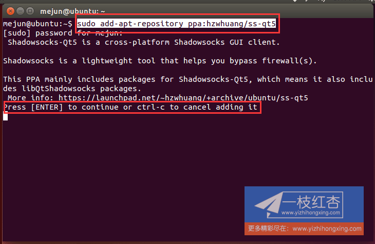
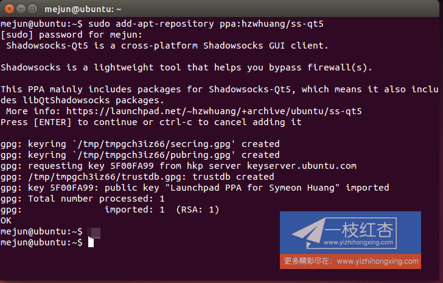
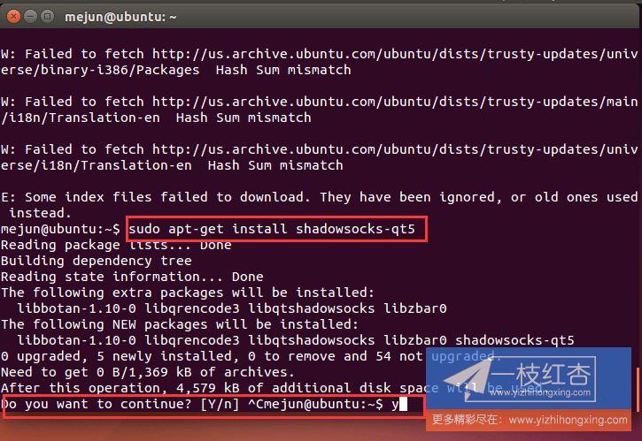
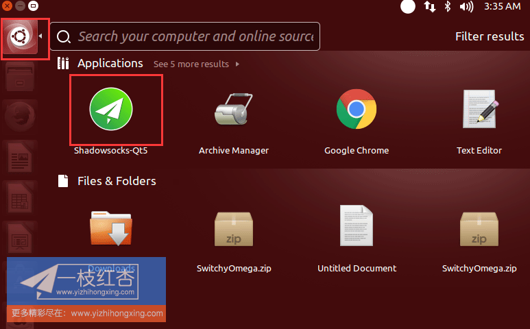
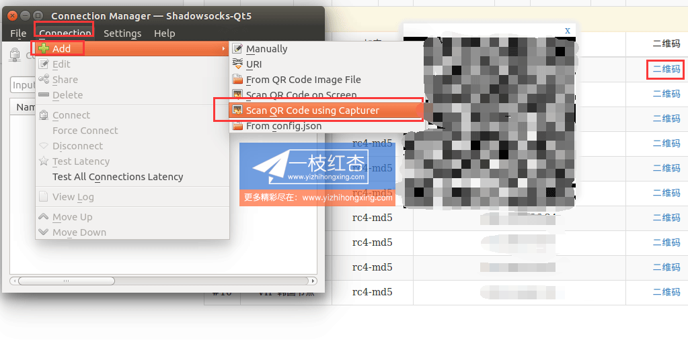
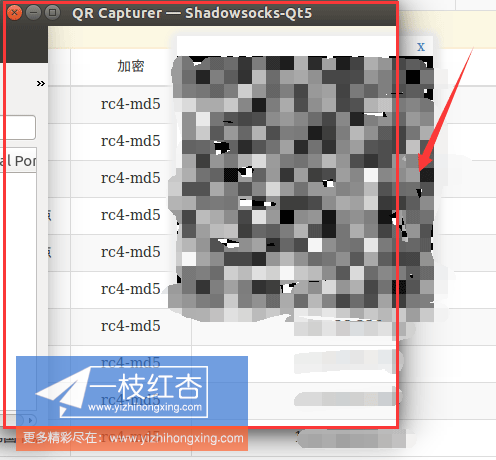
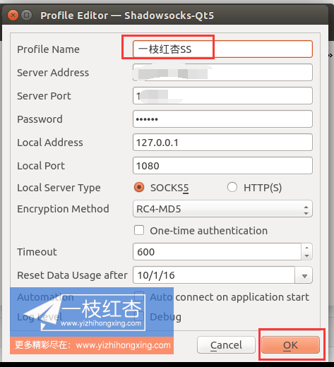

打开终端执行：sudo add-apt-repository ppa:hzwhuang/ss-qt5，根据提示输入root用户密码，
待下图时，按enter继续执行


执命令：sudo apt-get update，这一步需要的时间稍微长一些，完成后
执命令：sudo apt-get install shadowsocks-qt5，根据提示按Y继续

三条命令执行完成安装也就完成了、到搜索页面搜索shadowsocks，查看您安装的程序，如果没有找到程序则未安装不完整，请重复上面的步骤

登陆官网后台，用户管理中心，我的ss帐号，管理ss账号，点击有效帐号后面的查看详情，即可看见节点信息，点击节点信息后面的二维码弹出图片
运行shadowsocks-qt5客户端，connection、add 、Scan QR Code using Capturer 、弹出扫描框

移动扫描框，完全覆盖二维码图片

扫描到节点信息，会自动填写完成，更改profile Name 为节点名字以便于区分、ok

选中扫描的节点，点击Connect 启用，启用成功后右侧 Disconnect 选项会亮起，此时客户端已经配置成功。Linux下需要配合浏览器插件才能代理，请转移到浏览器插件安装相应教程